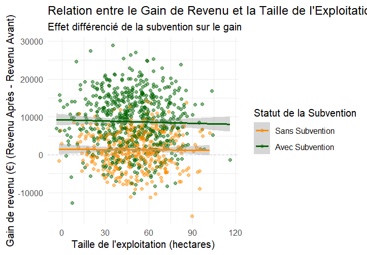
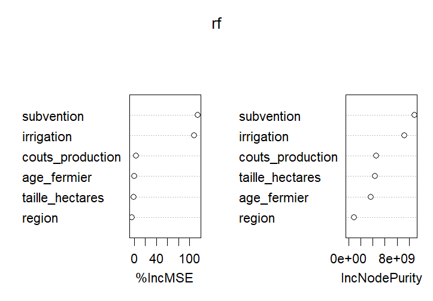
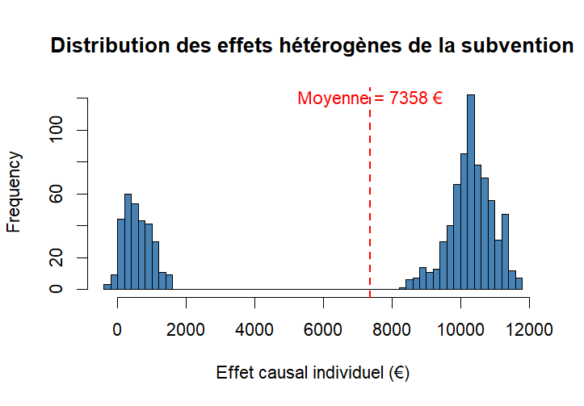
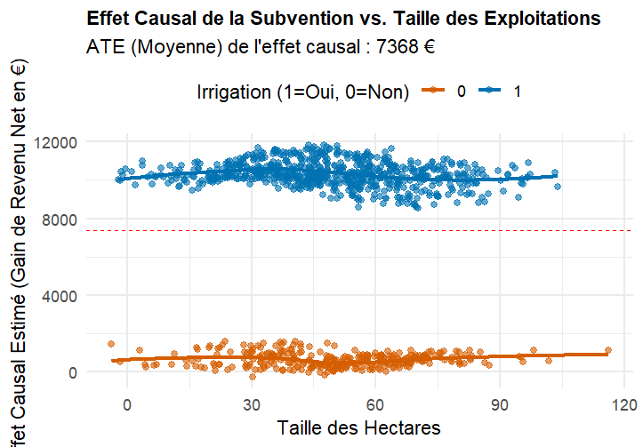
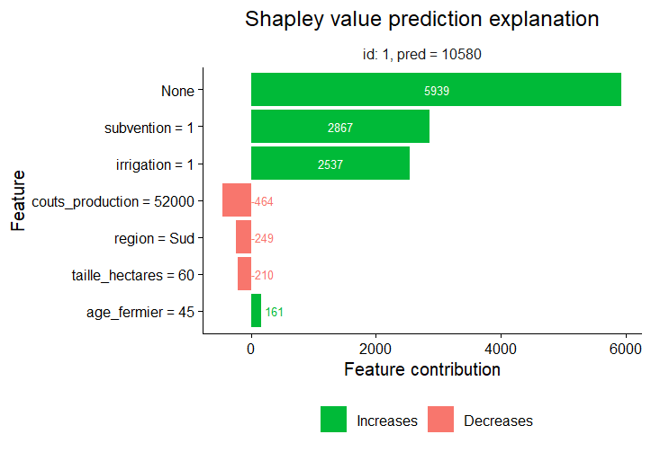
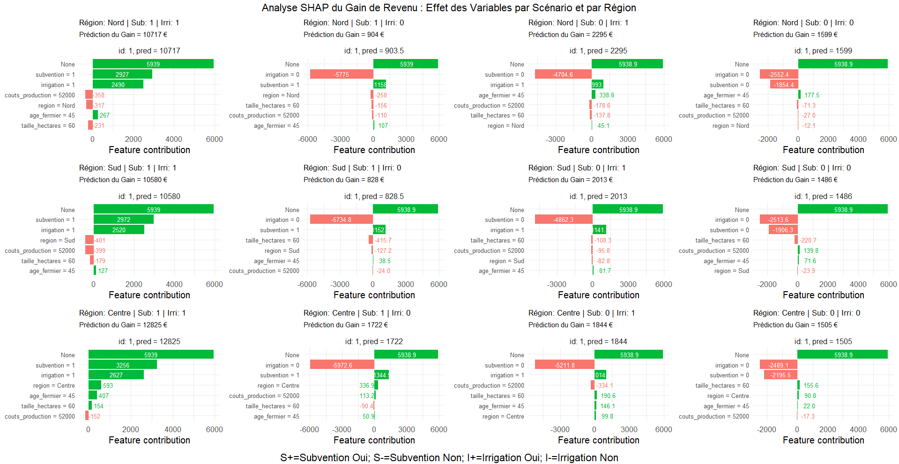

Donner un sens causal aux données économiques et maximiser l'impact public.
Mes fondations sont classiques : mathématiques, statistiques, économie et évaluation de programmes. Ma méthode, elle, est résolument tournée vers l'avenir.
En intégrant l'intelligence artificielle et la science des données à ces disciplines, je crée des outils décisionnels puissants et accessibles. Je ne me contente pas de bâtir des algorithmes prédictifs : je les traduis en cadres de mesure de performance (GAR) concrets. En collaborant étroitement avec les décideurs (emploi, agriculture, finance, politiques sociales), j'aide à (re)façonner des politiques plus justes et différenciées. L'objectif final reste le même : concevoir des solutions optimales, pour qu'elles soient profondément ancrées dans la réalité des usagers.
Dr. Saubaber Longang Gamo
Économiste & Lead Data Scientist • Ph.D. & M.A.P.
Gatineau (Québec), Canada
Plateformes Analytiques & Tableaux de Bord Décisionnels
Consultez les 4 applications développées et déployées en production pour l'inférence causale, le risque bancaire, le machine learning et les opérations MLOps. Vous pouvez tester l'application directement dans le visualiseur ci-dessous ou l'ouvrir en plein écran dans un nouvel onglet.
MLOps & Production
FastAPI • SLA p95 ≤ 4.1ms • PSIObservatoire Causal
DiD • TWFE • Causal Forest • SHAPLaboratoire Espace Latent
PyTorch • InfoNCE • Anti-HallucinationTerminal Prudentiel
IFRS 9 ECL • Bâle IV IRB • AML GraphServices & Domaines d'Intervention Stratégique
De la formalisation mathématique à la mise en production logicielle : un accompagnement sur mesure pour décideurs publics, institutions financières et entreprises technologiques.
Évaluation d'Impact Causal & Politiques Publiques
Conception et exécution de protocoles d'évaluation quasi-expérimentale rigoureux (Différences de Différences, Variables Instrumentales, Forêts Causales, RDD). Identification formelle du lien de cause à effet et neutralisation des biais de sélection.
Gouvernance & Gestion Axée sur les Résultats (GAR)
Audit, refonte et déploiement de Cadres de Mesure du Rendement (CMR/KPI) pour conseils d'administration et directions exécutives. Établissement de lignes de base pérennes et mise en place de processus de reddition de comptes fiables.
Ingénierie MLOps & Architectures Prédictives
Industrialisation de modèles d'apprentissage automatique (Machine Learning & Core ML) sous contraintes strictes de production : microservices FastAPI, conteneurisation Docker, pipelines d'auto-cleaning et suivi de dérive distributionnelle (PSI).
Modélisation Prudentielle & Risque Bancaire
Modélisation quantitative des risques de crédit selon les normes IFRS 9 (ECL 12 mois vs Lifetime) et les accords de Bâle IV (modèle asymptotique de Vasicek IRB). Algorithmes de détection topologique de blanchiment (AML/KYC).
Évaluation Hybride de l'Efficacité des Subventions Agricoles
Démystifier la boîte noire de l'impact : Analyse de l'hétérogénéité causale sur 4 850 exploitations agricoles par Machine Learning (Causal Forest & SHAP).
L'évaluation classique linéaire masque une distribution bimodale et des inefficacités structurelles majeures.
Sans système d'irrigation, l'impact causal de la subvention est quasi nul, générant un gaspillage de fonds publics.
L'irrigation s'impose comme la condition sine qua non pour libérer la rentabilité du traitement.
Maximisation du retour sur investissement social grâce au ciblage géographique et technique prioritaire.
Cadre Méthodologique Hybride : Économétrie Classique & Causal ML
Consulter l'Observatoire Causal LiveÉconométrie Linéaire
Établir la référence de base. Mesure de l'ATE global (7 358 €), insuffisant pour expliquer la variance structurelle.
Random Forest
Modéliser la surface non-linéaire du revenu (RMSE = 5 225 €) et identifier la subvention et l'irrigation en tête des prédicteurs.
Causal Forest (grf)
Quantifier les effets de traitement hétérogènes individuels ($\hat{\tau}_i$) sans biais d'imposition fonctionnelle a priori.
Explicabilité SHAP
Décomposer en euros réels la contribution marginale exacte de chaque caractéristique pour 12 scénarios d'exploitation.
Simulateur d'Impact Économétrique & Décisionnel
Sélectionnez les paramètres d'une exploitation agricole pour calculer le gain prédit et la recommandation d'aide publique.
Galerie des Résultats & Figures Économétriques Réelles

Figure 1 : Gain de Revenu et Superficie
Mise en évidence des limites des régressions linéaires face au chevauchement des distributions.

Figure 2 : Importance des Variables (%IncMSE)
La subvention et l'irrigation dominent la réduction d'impureté et la prédiction du revenu.

Figure 3 : Distribution des Effets Hétérogènes
Révélation d'une distribution bimodale (pics à 1 000 € et 10 000 €) rendant la moyenne ATE inopérante.

Figure 4 : L'Irrigation comme Condition
Les fermes irriguées captent plus de 9 000 € d'effet causal, contre seulement ≈68 € pour les non-irriguées.

Figure 5 : Explicabilité SHAP en Cascade
Quantification en euros réels : Base (5 939 €) + Subvention (+2 867 €) + Irrigation (+2 537 €).

Figure 6 : Matrice SHAP des 12 Scénarios
Validation systématique du différentiel de rendement entre Région Centre (12 825 €) et Nord non irrigué (903 €).
Recommandations de Politiques Publiques & Réallocation Budgétaire
| Niveau de Priorité | Configuration Cible | Gain Estimé ($\hat{Y}$) | Décision Publique & Justification |
|---|---|---|---|
| Priorité I (Optimal) | Région Centre + Irrigation + Subvention | 12 825 € | Allouer en priorité les subventions. Environnement institutionnel et technologique à rentabilité maximale. |
| Priorité II (Secondaire) | Régions Nord / Sud + Irrigation + Subvention | 10 580 € – 10 717 € | Maintenir le programme sous réserve d'un système d'irrigation fonctionnel. |
| Exclusion | Toutes Régions SANS Irrigation | ≈ 68 € à 903 € | Cesser l'octroi direct. Réorienter vers des microcrédits d'équipement ou des PPP d'irrigation. |
Compétences Techniques & Méthodologiques
Une alliance éprouvée entre modélisation économétrique causale, ingénierie logicielle MLOps et gouvernance stratégique.
Inférence Causale & Économétrie
- Forêts Causales (Causal Forests /
grf) Expert - Hétérogénéité des Effets de Traitement (HTE & ATE) Expert
- Explicabilité par Valeurs SHAP Avancé
- Différences de Différences (DiD / TWFE) Expert
- Variables Instrumentales (IV) & Modèles Structurels Expert
- Économétrie des Micro-données (LSMS-ISA) Avancé
Data Science & MLOps
- Python (FastAPI, PyTorch, Pandas, Scikit-Learn) Expert
- R (Analyse causale, grf, tidyverse, ggplot2) Expert
- Stata (Économétrie avancée, do-files automatisés) Expert
- SQL & Google BigQuery (Requêtes massives, fenêtrage) Avancé
- Docker & Microservices (Conteneurisation, CI/CD) Avancé
- Git / GitHub • Quarto • LaTeX Expert
Business Intelligence & Prudentiel
- Réglementation IFRS 9 ECL & Bâle IV IRB Expert
- Détection Topologique AML / KYC (Graphes) Avancé
- Power BI (Conception DAX, modélisation d'étoile) Expert
- Tableaux de Bord Exécutifs Haute Direction Expert
- Systèmes CAPI (CSPro, KoboToolbox, ODK) Expert
- Reporting narratif et datavisualisation Expert
Gouvernance & Gestion Axée Résultats (GAR)
- Cadres de Mesure de Rendement (CMR / KPI) Expert
- Lignes de Base (Baseline) & Suivi Évaluateur Expert
- Théories du Changement & Modèles Logiques Expert
- Audit de la Performance & Efficacité Publique Avancé
- Recherche Reproductible (DIME Banque Mondiale) Certifié
- Bilinguisme Professionnel Français / Anglais Bilingue
Expériences & Réalisations Mandatées
Une carrière internationale formulée à travers des réalisations concrètes et auditables.
Expert-Conseil en Gouvernance par les Résultats (GAR) & Scientifique des Données
Bibliothèque publique du Canton de Russell
- Auditer et refondre le cadre global de mesure de la performance (GAR/KPI) adopté par le Conseil d'administration.
- Concevoir et structurer un tableau de bord exécutif interactif axé sur l'impact sociétal, la santé financière et le progrès stratégique.
- Mettre en place une méthodologie de base de référence (baseline) pour assurer la pérennité du rapport d'impact.
- Réaliser des tests statistiques, des régressions économétriques et des segmentations d'usages.
- Extraire, assainir et interpréter les données pour orienter les décisions d'affaires de la direction.
Scientifique des Données & Évaluateur de Programmes
Ministère de la Santé Publique / Centre Marguerite (M2HC)
- Modéliser les dynamiques épidémiologiques ayant mis en lumière la hausse de 60 % des pathologies chroniques non-Covid.
- Déployer des dispositifs d'enquêtes CAPI sur tablettes et superviser les flux d'échantillonnage.
- Assurer le prétraitement, le nettoyage et le contrôle qualité des bases sanitaires.
- Rédiger des notes de synthèse stratégiques et des tableaux d'indicateurs pour les décideurs publics.
Agent d'Évaluation & Chercheur en Économétrie
Centre de Recherche en Management et Économie (CERME / CEREG)
- Conduire des analyses économétriques causales sur les bases LSMS-ISA pour évaluer l'impact des politiques agricoles sur la nutrition.
- Publier les résultats dans des revues scientifiques internationales avec comité de lecture (Agriculture & Food Security).
- Développer des protocoles statistiques reproductibles et co-organiser des séminaires d'excellence académique.
- Participer à l'accueil et à l'animation scientifique lors de la visite du Prix Nobel d'Économie à l'Université de Dschang (2024).
Recherchiste en Évaluation d'Impact Agricole
Ministère de l'Agriculture et du Développement Rural (MINADER)
- Évaluer l'impact socio-économique du Programme ACEFA-1 et du Programme National Pommes de Terre.
- Concevoir des méthodologies d'enquêtes participatives auprès des coopératives agricoles régionales.
- Produire des synthèses décisionnelles et des recommandations d'ajustement pour les directeurs de programmes.
Stagiaire Analyste Financier et Économique
Banque des États de l'Afrique Centrale (BEAC)
- Compiler et synthétiser les indicateurs macroéconomiques et monétaires régionaux.
- Préparer les dossiers techniques et statistiques pour les réunions du Comité de Politique Monétaire.
- Contribuer à la rédaction des notes de conjoncture financière trimestrielles.
Scolarité, Certifications & Prix d'Excellence
Un parcours académique de pointe en sciences économiques et analytique de données publiques.
Diplômes Universitaires
Maîtrise en Administration Publique (M.A.P.) — Analytique de Données
École Nationale d'Administration Publique (ÉNAP), Gatineau (Québec)
Doctorat en Économie Appliquée (Ph.D.)
Université de Dschang, Cameroun
Maîtrise en Économétrie (M.Sc.)
Université de Dschang, Cameroun
Baccalauréat en Sciences Économiques (B.Sc.)
Université de Dschang, Cameroun
Ateliers Spécialisés & Certifications
Prix & Bourses d'Excellence Reçues
Publications & Travaux de Recherche
Articles publiés dans des revues internationales à comité de lecture et rapports d'évaluation économique.
Balancing indigenous knowledge, science, and nonfarm diversification for climate adaptation and food security: A gender-based analysis in rural Cameroon
Journal of Agriculture and Food Research (Elsevier), ISSN: 2666-1543.
Women, income use and nutrition quality : Effects of women’s decision-making in rural households in Cameroon
Agriculture & Food Security (Springer Nature), DOI: 10.1186/s40066-024-00483-3.
Economic growth and environmental Kuznets curve for CEMAC zone countries: does deforestation matter?
International Journal of Research Publications (IJRP).
Thèse de Doctorat (Ph.D.) & Mémoire M.A.P. (ÉNAP)
- Longang Gamo, S. (2022) : Essais sur la résilience agricole, la productivité et la sécurité alimentaire face aux chocs climatiques en Afrique subsaharienne. Thèse de doctorat (Ph.D.) en Sciences Économiques, Université de Dschang (Mention Très Honorable avec Félicitations du Jury).
- Longang Gamo, S. (2024) : L'évaluation axée sur les résultats des politiques publiques de soutien et de transfert : vers un cadre d'aide à la décision empirique. Mémoire M.A.P., ÉNAP Québec / Montréal.
Rapports d'Évaluation Économique, Sanitaire & Publique
- Longang, S. G. (2025) : Évaluation hybride de l'efficacité des subventions de fermes agricoles : Démystifier la boîte noire de l'impact (MINADER).
- Kenne, I. et Longang, S. G. (2021) : Évaluation de l'Observance continue de l'hygiène des mains en maisons de repos (Belgique).
- Longang, S. G. et Jaza A. F. (2018) : Rapport d'Évaluation Économique et d'Impact du Programme ACEFA-1 (MINADER).
- Longang, S. G. et Manfouo H. (2016) : Évaluation Économique du Programme National de Relance Pommes de Terre.
Conférences, Colloques & Audiences d'Experts
Explorez sur la carte interactive et la timeline mes interventions de recherche, symposiums internationaux et communications ministérielles.
6 Pays & 3 Continents
Rayonnement en Amérique du Nord, Europe, Asie et Afrique
7 Interventions Clés
Audiences gouvernementales, conférences plénières & sessions d'honneur
Causal ML & Politiques
Causal Forest (grf), Double/Debiased ML, Inférence Causale & GAR
Effets Causaux Hétérogènes (HCE) et applications du Machine Learning en évaluation d'impact dans l’économie bleue
Effets Causaux Hétérogènes (HCE) et applications du Machine Learning en évaluation d'impact dans l’économie bleue
Présentation méthodologique sur l'apport des algorithmes de Causal Forest et du Double/Debiased Machine Learning pour mesurer la distribution des effets de traitement hétérogènes dans la durabilité des ressources marines et côtières.
Intégration du Causal Machine Learning dans les cadres d'évaluation gouvernementaux & Deep-Dive DML
Communications techniques et notes de discussion stratégiques présentées aux directions générales d'évaluation sur la modernisation des protocoles d'évaluation d'impact : passage des estimateurs classiques instables vers des estimateurs causaux robustes à haute dimension.
Inférence Causale et Machine Learning Moderne : Causal Forests & Synthèse Économétrique
Participation et communications de recherche sur les frontières de l'économétrie causale : Difference-in-Differences décalées (Callaway-Sant'Anna, Sun-Abraham), Causal Trees & Forests (Athey & Wager), et calibration d'impact.
Adoption of Cocoa Certification Scheme and Farmer’s Technical Efficiency in Cameroon
Communication scientifique sur l'estimation de l'efficacité technique des producteurs agricoles sous certification par procédure double bootstrap de Simar et Wilson, isolant les déterminants institutionnels et environnementaux.
Organisation de la Session d'Honneur du Prix Nobel d'Économie & Séminaires d'Évaluation d'Impact
Coordination scientifique lors de la réception du Prix Nobel d'Économie, direction des séminaires d'analyse statistique avancée sur l'impact environnemental des normes alimentaires et co-construction des approches participatives d'évaluation.
Structural Change Effects of Agricultural Land Expansion in Sub-Saharan Africa
Modélisation macro-économétrique sur données de panel évaluant les effets de l'expansion foncière sur les transitions structurelles de l'emploi, la productivité factorielle et la dynamique sectorielle en Afrique subsaharienne.
Structural Dynamics, Agricultural Modernization & Environmental Impact in Africa
Communication sur les arbitrages entre expansion des terres arables, préservation de la biodiversité et trajectoires d'industrialisation verte pour les économies émergentes.
Carte de Visite Numérique & Codes QR
Scannez les codes QR pour accéder directement à mon profil LinkedIn ou à ce Portfolio en ligne, ou téléchargez ma carte de contact vCard.
Prêt à collaborer sur vos projets d'évaluation, MLOps ou d'analyse causale ?
Je suis disponible pour des mandats de consultation, des directions de projets de valorisation de données (GAR/KPI), des postes d'analyste de politiques économiques ou des collaborations de recherche appliquée.
Engagement Professionnel & Consultation
Disponible pour des mandats de direction de projets analytiques, d'évaluation quasi-expérimentale d'impact, de modélisation prudentielle bancaire ou d'ingénierie MLOps.
Proposer un mandat / Prendre contact Consulter mon profil LinkedIn Explorer les Dépôts GitHub